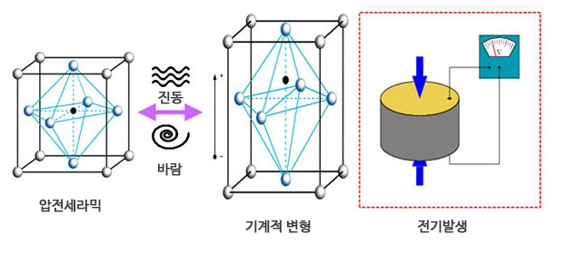

일반 사람들은 압전소자 라고 하면 '그게머야?' 라고 생각이 드시는게 당연합니다.
압전소자의 정의는 네이버에 치시면 기계적 응력을 걸면 전압이 발생하고 반대로 전압을 걸면 일그러짐이
발생하는 수정이나 압전 세라믹스 등을 사용한 소자로, 압력을 가하면 전압이 변화하고(압전 효과), 반대로
전압을 가하면 팽창되거나 수축되는 성질을 가진 소자를 말한다. 이렇게 나오는데 너무 말이 어렵죠? 제가 간단하게 설명드리죠.
압전소자는압=압력을 가했을때! 전=전기가 만들어지는 소자! 입니다. 그래도 이해가 안되신다고요? 좀 더 쉽게 설명하자면 바람을 불거나 작은 진동으로도
전기가 만들어 집니다. 저희는 이러한 압전소자를 등산스틱에 부착해 봤습니다.